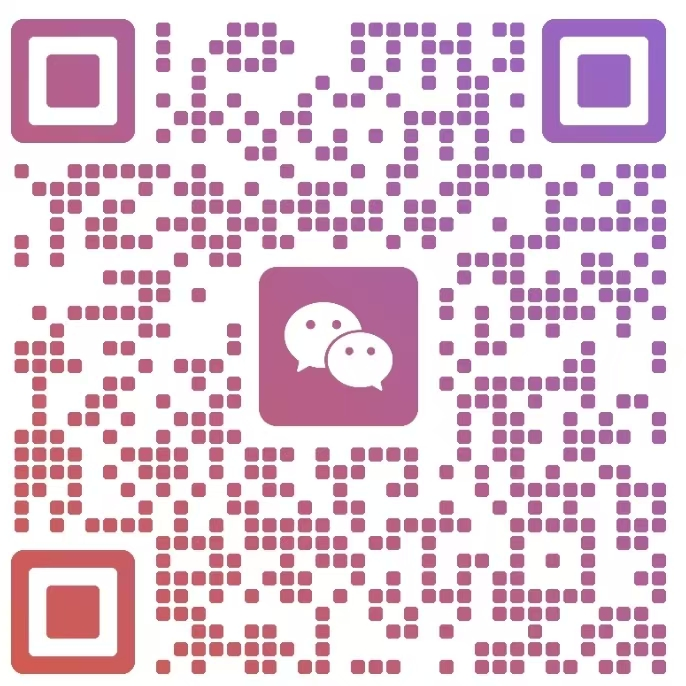

個人面試
1–2 位老師、約 10–20 分鐘，問背景／興趣／選校原因。例：聖保羅男女、皇仁書院。
內地家庭快速了解並跟上香港教學（中文·英文·數學）＋ 練習打卡 · 賬號登入·數據保存在本設備 · 公開版 v2.02（全站免費）
香港學校用繁體字（正體字）教學與作答；內地用簡體字。插班頭半年最痛的是「認繁、寫繁」。
香港用全角「、，。」及書名號《》；引號用「「」『』」。內地用「，。」及「""」。作文易因標點格式扣分。
香港 DSE 中文科必考文言文與古詩詞，小學已接觸；內地小學古詩文量大，但系統文言教學多在初中。
香港中文科設獨立聆聽卷與說話卷（口語溝通／朗讀）；內地中考有聽力但說話考查較少。
香港寫作重實用文（書信、建議書、演講辭、報告）；內地重記敘／議論文。格式錯就掉分。
香港小學起大量英文授課（尤其英中／直資）；英文是學科載體而非純外語。內地英文是外語科目。
香港英文科分 Reading / Writing / Listening / Speaking 四卷（小學 TSA、中學 DSE）；內地中考英語含聽力＋筆試，口語比重較低。
Band 1 英中對詞彙與閱讀量要求明顯高於內地同齡。→ 見「練習 → 詞表」。
香港小學重 Phonics 自然拼讀；內地多教國際音標（IPA）。
香港重格式寫作（letter / email / report / story）；內地重命題作文。→ 學術英文路線見專文。
香港英中數學多以英文出題與作答。術語聽不懂＝題目看不懂。→ 背熟術語表（見「練習 → 數學」）是跟上第一步。
香港小學較早接觸統計／數據處理／概率；內地代數與幾何的深度與提早程度更高。插班時兩邊「已學／未學」章節常錯位，需按學校進度補。
符號（× ÷ ( )）與內地基本一致，但英文題目用句式描述運算，e.g. "the product of a and b"（a 與 b 的積）、"increased by"（增加）。
按星期幾自動顯示今天該做的幾項：做完一項打個勾，明天自動重置。右邊按鈕直接跳到對應練習。總表與 35 週排期見「補習材料」。
對照「35 週排期表」裏當月那一行的驗收指標：達標繼續照表走；不達標，下週把沒過關的那項加一次，不往下趕進度。
課表來源：hk-placement 知識庫《學術英語能力路線》減壓檔（2026-10-29，坊間整理）；「時態與題型」為 v1.89 新增項（每週 2 次 × 15 分鐘）。頻率與補習材料①總表一致，只按天排開。
「背古詩」＝背詩星圖（185 首按年級分 7 段點亮，看整體進度）＋古詩詞列表（繁體＋拼音＋粵拼全文）＋一首詩四步（聽讀 → 看譯文 → 遮字背誦 → 抽查）。想練做卷請切到「中文試卷」。
在「補習材料 → ⑤ 繁體翻卡／⑥ 官方字表」或「速覽 → 繁體對照」看到不會認的字，點卡片上的「＋本」收進來，也可以在下面自己輸入。以後切到「翻卡複習」遮著認，認得了打個勾。資料只存本瀏覽器、跟賬號走，不會上傳；清快取或換設備前請先「導出生字本」。
本站不預置任何生字表；生字本內容由使用者自行輸入或從本站公開字卡（繁體翻卡／繁體對照／官方字表）收進，只保存在本設備。導出檔為純文字 JSON，換設備時用「匯入生字本」合併（同字自動跳過，不會覆蓋既有內容）。全站「導出進度／匯入進度」亦包含生字本。
在「中小學單詞」或「詞表」看到想重點記的詞，點該詞卡上的「＋ 單詞本」即可收進來；也可以在下面自己輸入。中文義與備註可稍後補，改完自動保存。資料只存本瀏覽器、跟賬號走，不會上傳；清快取或換設備前請先「導出單詞本」。
本站不預置任何出版社詞表或第三方題庫；單詞本內容由使用者自行輸入或從本站公開詞卡加入，只保存在本設備。導出檔為純文字 JSON，換設備時用「匯入單詞本」合併（同名詞自動跳過，不會覆蓋既有內容）。全站「導出進度／匯入進度」亦包含單詞本。
這是打卡本，不是詞表。只列出家中課本的冊與主題目錄，讓孩子按「已學／已複習／已聽寫」三格自己勾；本站不收錄任何單詞、中文釋義或教材頁面，請對照紙本課本使用。完整詞表留在家裡本機的單檔單詞本，不上傳、不下載。
詞庫包（_lwte_pack.json）放在你自己電腦與 Obsidian 私人庫裡。把它傳到手機後，在本站點下面的按鈕選檔匯入，1024 個詞條就會留在這台裝置的瀏覽器：按每一課（主題）分組，每個詞一張卡片，格式跟「中小學單詞」一樣——英文＋音標＋🔊 發音＋繁體中文義，可逐詞打勾、可加入「我的單詞本」、可搜索、可打印。網站本身沒有、也不會有這些詞——匯入的檔案不會上傳，只存本機。
手機窄屏：向右滑動下面的表格，就能勾選「已學／已複習／已聽寫」三格。
| 主題（課本目錄） | 詞數 | 已學 | 已複習 | 已聽寫 |
|---|
手機窄屏可左右滑動表格。勾選即存本機（跟賬號隔離）；切冊不影響其他冊的進度。「印空白聽寫紙」會印出本冊主題與空白橫線，由家長按課本報詞，紙上不會出現任何單詞。
詞表版權屬原出版社。家中課本的 Word Bank 檔頁腳載有版權聲明；本站是公開倉庫，把整份詞表放上來等於公開發行。因此線上只保留「冊／主題名稱／詞數」這類事實性目錄，零詞條、零中文釋義、零教材頁面、零下載連結、零外鏈。
家庭學習用的完整版在本機。已另整理成一份單檔 HTML 與一篇私人筆記，放在家裡電腦與私人庫，全部文字、詞數與分冊只作家庭學習，請勿外傳、勿轉貼到網站或公众号。以上為本站自寫的取用原則，不是法律意見；授權範圍請向原權利人確認。
進度是本地資料。勾選存在這台裝置的瀏覽器，換設備不跟隨；可用「學習進度 → 匯出」備份，亦受清空進度影響。
整理依據：家中 1A–6B 十二冊英語課本各冊 Word Bank 之冊／主題目錄與詞數（2026-11-07 盤點，共 12 冊 127 主題）｜本區文字全部本站重寫，未引用任何詞條、釋義或教材原文
EMI（英文中學）通常另設英文能力測試：朗讀、閱讀理解、看圖說話或即時問答，表現往往具決定性。
1–2 位老師、約 10–20 分鐘，問背景／興趣／選校原因。例：聖保羅男女、皇仁書院。
4–6 人圍話題討論，觀察溝通、邏輯、合作。例：拔萃男書院、瑪利曼。
英文朗讀、閱讀理解、看圖說話、即時問答；表現常決定性。
了解家庭教育理念，通常不計分但影響整體印象。例：培英中學。
全面評估、難度最高。例：華仁書院（九龍）、喇沙書院。
部分學校加考中／英／數／科筆試（如景嶺書院），佔評分一環。
| 題型 | 出現佔比 | 示例 |
|---|---|---|
| 自我介紹 | 100% | 用 1 分鐘介紹自己 |
| 報考原因 | 90% | 點解想入我哋學校？ |
| 個人專長 | 80% | 你最大的成就是咩？ |
| 中英雙語切換 | 70% | 廣東話問完轉英文問 |
| 時事評論 | 60% | AI 對教育有咩影響？ |
| 情境題 | 55% | 同學抄你功課你點做？ |
| 閱讀理解 | 50% | 即場讀文章後回答 |
| 小組討論 | 45% | 6 人一組討論話題 |
| 創意思考 | 40% | 如果你係校長會改咩？ |
| 家長面見 | 30% | 家長單獨或同學生見 |
用法：按目標學校模式，從上表圈出最相關 5–6 類優先練習（如小組型重點練時事／創意／討論）。
結構：Who am I? → What do I like? → What am I good at? → What is my goal?。準備「骨架」現場發揮，切勿背稿——Band 1 面試官一眼看穿。
Tell me about your family / school. · 用三個詞形容自己。
Why do you want to study here? · 同時被兩校取錄點揀？
What is your greatest achievement?
AI 對教育影響？環保／健康生活看法？
同學抄功課點做？朋友唔開心點安慰？
If you were the principal, what would you change?
讀文章、加詞、答「睇過咩書？作者係邊個？」
點管理時間／面對壓力／處理衝突？
景嶺書院（2026-02-08 面試）：粵／英／普介紹自己；英文朗讀＋增詞＋延伸問（喜好／看過咩書／作者）；情境題「課室還可加咩」；數學題；做卷（中／英／科）；小組討論（粵英普 3 語，先自我介紹，約 4 條英文＋2 條普問）。
可風中學（荃灣 Band 1 英中）：中一面試創意問題須英文作答。
⚠️ 題例每年不同，僅供熟悉題型與語言切換，不可當真卷背誦。
家長面試：具體講子女性格、優點、需改善之處；表現了解子女、願配合學校、能支援適應中學生活。不必把子女說得完美。
以上均為補習／教育機構或傳媒整理，非學校或考評局官方發布；正式題型與評分以目標學校當年公佈為準。
英文詞彙共 1,800 個：港小基礎詞 335（一年級 73／二年級 68／三年級 56／四年級 50／五年級 47／六年級 41，已分級）＋ 通用詞表 B1 檔 1,465（CEFR B1，未分年級）。另收古詩詞 185 首（不計入單詞量）。
⚠️ 這 1,800 詞是入門奠基包，遠未覆蓋真實目標（見下表）。港小基礎詞只佔小六真實要求的約 1/8；通用 B1 詞是成人通用英語、不等於香港課本詞序。真要銜接，仍須大量閱讀補詞。
| 階段 | 年級 | 累計應掌握詞量（約） | 說明 |
|---|---|---|---|
| 小學 | 一年級 P1 | 500–800 | 起步：課堂用語＋高頻名詞動詞 |
| 二年級 P2 | 1,000–1,200 | 加入簡單句型詞 | |
| 三年級 P3 | 1,500–1,800 | 閱讀起步量 | |
| 四年級 P4 | 2,000–2,200 | ||
| 五年級 P5 | 2,300–2,500 | ||
| 六年級 P6 | 2,500–3,000 | 小六呈分試實際水平（Band 1 學校） | |
| 中學（DSE） | 中一 S1 | 3,500–4,000 | 插班關鍵門檻：科目全英授課 |
| 中二 S2 | 4,500 | ||
| 中三 S3 | 5,000–5,500 | ||
| 中四 S4 | 6,000 | ||
| 中五 S5 | 7,000 | ||
| 中六 S6（DSE） | 6,000–8,000 保底／衝 L5 約 10,000+ | 閱讀被動詞 EHLA 門檻 L3 6,500／L5 11,000 |
來源（均坊間參考 · 檢索 2026-10-31）：小六 2,500–3,000 — 智瞳教育《中國香港學校英文難度深度解析》、51Talk 香港升學中心、公眾號「葫蘆媽的朋友们」；中六 6,000–8,000 — 智瞳教育；DSE 分級門檻（閱讀被動 L3≈6,500／L5≈11,000，寫作主動 L3≈3,000／L5≈5,500）— EHLA dse-english.org（基於 past paper 難度與 HKEAA 報告整理）；4,000 常用詞保底 — 博纳 DSE 備考文。教育局（EDB）不公布官方必背詞單，以上為機構估算，年級歸屬為常見教學進度估算。
以「北區 Band 1 英中」為目標校示例：小六（P6）真實水平約 2,500–3,000 詞，距中一門檻 3,500–4,000 尚有缺口。建議推進路線：先把港小基礎詞 335 全吃透（閃卡＋打卡），同步大量閱讀補到 P6 上限 3,000，再衝 S1 3,500–4,000 銜接入學；學術詞（數學／科學術語）單獨過一遍（見練習→數學術語表）。
不背單詞書，在適合程度的英文讀物裡遇詞記詞；有上下文、記得牢、順帶學用法。學術詞單獨背。來源：智瞳教育備考文（坊間）。
會認（閱讀）≠ 會用（寫作口語）。DSE 寫作主動詞 L3≈3,000／L5≈5,500（EHLA）。先衝被動量，再煉主動輸出。
按遺忘曲線複習，比死背一遍牢。本站「🎴閃卡抽查」即此邏輯；可用 Anki 加強。
每詞點 🔊 跟讀（en-US），聽覺＋口型記憶，避開「啞巴英語」。本站港小詞／詞表均帶朗讀。
貪吃蛇吃詞、🔥連續打卡火焰、🏅徽章、🎴閃卡——把背詞藏進日常，降低抗拒。見本站「悠閒」「練習→英文」。
-tion 名詞、-ful 形容、un- 否定；用影像／故事聯想。適合中高年級擴詞。
方法學為通用學習科學與備考經驗整理（坊間參考），非官方教學指引；80/20 框架為本規劃顧問方法論（見升學規劃→學習路線），時間表與教材按各級實際情況重排。
這裡不放課本原文。每個單元按同一個主題另寫一篇短文，配 4 道理解題、2 個仿寫任務、1 個朗讀任務——把那一課的語法與詞彙放進真實閱讀裡再走一遍。課本音檔在你本機教材資料夾，本站不收錄、不上傳。
密鑰僅存於本瀏覽器 localStorage，不會上傳到本站以外的任何地方；僅發往你填寫的接口地址。若瀏覽器報 CORS 錯誤，說明該接口不允許瀏覽器直連，可改用 OpenRouter / Groq / 本地 LM Studio，或自建反向代理。
| 分類 | 中文術語 | 英文術語 | 備註 |
|---|
適用：小六英文中上、每週 ≤3 小時（英文約 2h＋繁體粵語約 1h），2026.11 → 2027.7.6 叩門。設計原則：不背單詞——詞彙靠興趣泛讀自然復現，不查詞典、不考核；「課外知識」藏進每週 90 秒口頭分享。排期框架來自機構推文（非學術），教材級別為坊間整理——起點以定級三連測為準。
👇 下面 10 個模塊已折疊，點標題條展開；①排期表默認展開，日常打卡用 ③⑥⑦，⑧ 是入學後的資源書籤，⑨ 不知道從哪開始先看它，⑩ 按年級找本站原創卷；課本詞彙打卡在「練習 → 英文 → 某文單詞本」。
| 月份 | 能力線（80%） | 應試線（20%） | 驗收指標 |
|---|---|---|---|
| 2026.11 | 定級三連測；每日 20 分鐘興趣泛讀啟動（本頁打卡） | 收集 3 所目標校收生準則與面試形式；直資報名資訊 | 定級表出結果；泛讀連續打卡 21 天 |
| 2026.12–2027.1 | 寫作從句子層起步（每週 2 次×30 分鐘） | 直資報名窗口內遞表（各校截止日不同，以官網當年公告為準）；面試話題庫 ≥10 題 | 能寫 8–10 句連貫、無重大語法錯的段落 |
| 2027.2–3 | 段落寫作（主題句＋支撐）每週 1 篇＋批改；每週 90 秒口頭分享 | 目標校題型摸底；數學英文術語啟動（本頁翻卡） | 100–120 詞、有主題句的段落 |
| 2027.4–5 | 維持，不加新內容 | 模擬卷 1–2 套＋模擬面試 ×2 | 限時內完成模擬卷 |
| 2027.6–7 | 只做錯項弱項 | 6 月材料齊套（成績單蓋章＋繁體/英文翻譯）；7.6 官津放榜後叩門實戰 | 90 秒自我介紹不卡；材料 8 樣齊 |
| 項目 | 頻率 | 時長 | 對應 |
|---|---|---|---|
| 興趣泛讀（不查詞典、不考核） | 每天 | 20 分鐘 | 本頁「泛讀打卡」 |
| 寫作（Great Writing 教材） | 每週 2 次 | 各 30 分鐘 | 教材清單② |
| 口頭分享／面試練習 | 每週 1 次 | 30 分鐘 | 本頁「面試話題庫」 |
| 數學英文術語翻卡 | 每週 1 次 | 20 分鐘 | 本頁（2027.2 起） |
| 繁體字認讀 | 每天 | 10 分鐘 | 本頁「繁體翻卡」 |
| 粵語磨耳朵（RTHK 兒童節目） | 每天 | 10 分鐘 | 只聽不跟讀 |
這張總表已升級成可打卡的「今日課表」（練習 → 第 1 子頁）：按星期幾顯示今天該做的、做完打勾、按鈕直達對應練習。
| 模塊 | 用什麼 | 費用 |
|---|---|---|
| 寫作主線 | Great Writing Foundations → Level 1（NGL/Cengage 第五版）：Foundations 練「寫對句子」，句子穩了進 Level 1 學「主題句＋支撐＋結論」。35 週讀完這兩級剛好，別買 Level 2。若定級測出句子層已過關，跳過 Foundations 直接 Level 1。 | 只買這兩本 |
| 泛讀堆量 | ① 手頭已有牛津閱讀樹/TreeTops ② 圖書館／電商按藍思值自選：橋梁書起步，中後期進英文兒童非虛構（選她感興趣的主題） | 免費（已有＋圖書館） |
| 面試／口語 | 本頁面試話題庫＋90 秒計時器，不用買書 | 免費 |
| 數學題幹 | 本頁數學英文術語翻卡 60 詞（6 週） | 免費 |
| 繁體字 | 教育局《香港小學學習字詞表》（官方文件）＋本頁繁體翻卡 100 字 | 免費 |
| 粵語聽力 | RTHK（香港電台）兒童節目／粵語配音動畫 | 免費 |
教材內容僅限家庭學習，請勿外傳、勿打印傳閱。教材 CEFR/級別對應為坊間教輔整理（非官方測評），起點以定級三連測為準；教材版本信息以出版社官網為準。
中學階段的英文教材、試卷庫與官方自學平台，見本頁 ⑧ 中學英文 · 外部資源導航（只列入口，不轉載內容）。
用法：每週挑 1–2 題，先按「90 秒計時」開講；講完展開看要點，對照補漏。面試語言多為粵語＋英文（坊間整理，各校不同）——英文講不出的內容可先用中文說再試英文。
2027.2 起每週 1 組 10 詞：先翻卡認詞，再在自己的數學練習裡找出這個詞。點卡片翻面看中文。
每天 10 分鐘翻一組：看簡體想繁體，翻開對答案。全部認熟後換書本認讀（教育局《香港小學學習字詞表》）。
來源：教育局《香港小學學習字詞表》(2007) 小學用字一覽表——共 3,171 字（第一學習階段小一至小三 2,169 字＋第二學習階段小四至小六 1,002 字），按筆畫序，異體字算一字。三種用法：搜字驗證、今日認讀推進、全表瀏覽。
每天 20 字 × 3,171 字 ≈ 159 天（約 5 個月），剛好覆蓋 35 週路線裏的繁體認讀線；配合上方⑤的簡→繁翻卡一起用。
全表瀏覽：第 頁（每頁 60 字，按筆畫序）
規則只有一條：每天碰英文 20 分鐘（漫畫/故事/科普視頻都算），做完點一格。不查詞典、不寫讀後感、不考核——打卡本身就是全部任務。數據保存在本設備、跟賬號走。
按「先認字 → 再看該背多少 → 想練才出卷 → 想講才計時」排，全部是站內既有練習。泛讀 20 分鐘做完就夠，下面只是自選；點了會跳去該模塊，回來按上方 ⑦ 標題條。
下面只是把 21 格按週分段、方便看進度，不是課程表，也沒有官方進度要求；三段做的事情其實都一樣——每天碰英文 20 分鐘。
手機窄屏可左右滑動下面的表格。
| 進度 | 做什麼 | 不要做 |
|---|---|---|
| 第 1–7 格 | 先把「每天碰 20 分鐘」變成習慣，材料讓小孩自己挑，看完自己點格。 | 不查詞典、不寫讀後感、不考核。 |
| 第 8–14 格 | 照舊 20 分鐘，換成想追下去的主題；想換書就換，不必讀完一本才換。 | 不加時數、不加測驗、不追問讀懂多少。 |
| 第 15–21 格 | 讓小孩自己選、自己點格；家長只負責把書放到手邊。 | 不代打卡、不把泛讀改成精讀。 |
每段結束看下方打卡格的連續天數即可；斷了不用補，明天接著讀就好。
教材內容僅限家庭學習，請勿外傳、勿打印傳閱；本站不存放第三方教材內頁、書單原文或試卷，只列類型與取用原則。教材級別對應為坊間整理（非官方測評），起點以定級三連測為準。
泛讀 20 分鐘讀什麼？下面都是官方或開放授權的免費平臺，本站只給入口與一句話說明，內容版權歸原站。前兩個不用圖書證，註冊就能用；有香港圖書證的再加圖書館電子書。
手機窄屏可左右滑動下面的表格。
| 平臺 | 有什麼（本站自寫） | 入口 |
|---|---|---|
| Oxford Owl 免費電子書庫 | 牛津大學出版社官方，3–11 歲分級電子書；免費註冊家長帳號即可讀，可按級別選書。 | oxfordowl.co.uk |
| Storyline Online | 明星朗讀繪本影片 100+ 條，免費無廣告；先聽後讀，適合起步。 | storylineonline.net |
| 香港公共圖書館 · 電子書 | OverDrive／HyRead／SUEP 等中英文電子書與有聲書，需圖書證登入（以圖書館官方為準）。 | hkpl.gov.hk |
| 香港閱讀城（教育城） | 官方書架免費試閱中英文電子書；完整書庫走「e悅讀學校計劃」，看學校有沒有訂。 | hkreadingcity.net |
| 香港故事書 | 開放授權的香港故事，可播粵語讀聲、按閱讀級別選；兼練粵語耳朵。 | storybooks-hongkong |
選書五指法則：隨便翻一頁，不認識的詞有幾個就數幾根手指——超過 5 個太深、0 個太淺，1–3 個剛剛好。實體書同理：圖畫多、句子短、成套的橋梁書最容易讀進去。
規則不變：不查詞典、不考核、讀完喜歡就算數。
這不是評分表，只是提醒大人別把泛讀變成功課。勾選只存在本設備、跟賬號走，不影響小孩的打卡格。
①–⑦ 是小六衝刺用，⑧ 是入學之後的延伸書籤。下面只放「機構名稱＋官方入口＋本站自寫的一句話說明」；試卷、答案、評卷參考、教材內頁、機構文章原文與搜尋摘要，本站一律不存放、不轉載、不爬取。
依公開資料整理，連結 2026-11-06 核對；外鏈版權歸原站，本站與之無合作或背書關係，以各站最新公告為準| 資源 | 提供什麼（本站自寫） | 性質 |
|---|---|---|
| 教育局 · Academic Use of English | 學術英文自學包：按章節講學術詞彙、句式、改寫與段落結構，附活動紙、海報及可打印版本。原為高中設計，插中一家庭先借「段落結構」一章就夠。 | 教育局公開資源 |
| 香港教育城 · 成長錦囊（中學生） | 「英文科實用自學材料推薦」：用例子講上面那套學術英文資源怎麼用。讀這篇介紹即可，材料本身回教育局頁取。 | 教育城公開頁 |
| 香港考試及評核局 HKEAA | DSE 卷別、評核安排與官方出版品的權威入口。中三／中四以上插班才用得上，中一不需要刷歷屆卷。 | 官方 |
| 香港教育城首頁（由此進 OQB） | 網上試題學習平台 OQB 與考評局合作，含聆聽與綜合能力練習；一般需教城／學校帳號，家長未必能自行登入，先問就讀學校。本站不放未核實的深層連結。 | 官方平台 · 需帳號 |
| 學友社 · DSE 網上備試補給站（student.hk） | 免費公開的模擬卷、聆聽資料與評卷參考目錄；該站頁面明示「版權所有 不得轉載」，請到原站下載自用，本站不放任何一份檔案。 | 第三方 · 不得轉載 |
| 類別 | 名稱（僅作指稱） | 本站處理 |
|---|---|---|
| 教科書／補充練習 | Longman English Edge (2nd Edition)／Pearson；Oxford University Press (China) 初中補充練習與 Thematic Anthology；雋思《英文常用前置詞（英漢對照）》 | 依校本用書自行選購；不掃描、不摘錄、不提供下載，也不貼封面圖 |
| 試卷／題庫站 | RISEMARK 升分坊、Band1.org 試卷庫、My English Tutor HK（有免費中一練習） | 多為會員／點數制，或由製作者保留版權；不入庫、不爬取、不代理。想練請到原站按其條款取用 |
| 備考文章 | 升學機構與媒體的攻略、榜單、家長經驗文 | 標題與摘要都不轉載，只用來判斷「有哪些題型」這類事實，再由本站重寫 |
1. 先看卷別結構。中學英文筆試通常落在閱讀、詞彙、語法、寫作，另加聽說或面試——這是通行歸納，不是教育局統一規格，各校自定，以目標校當年公告為準。
2. 補學術詞彙與英文題幹。EMI 學校的數學、科學用英文出題；先打底「練習 → 數學 → 中↔英術語表」與「練習 → 英文 → 詞彙路線圖」，比急著刷卷划算。
3. 面試會切語言。全英／粵語混合常見，練「用英文講觀點」見「練習 → 英文 → 升中面試」的自我介紹與小組討論卡。
4. ⚠️ 別把坊間數字當硬指標。網傳的雅思分數門檻、劍橋證書、各科分值佔比，多來自機構宣傳或個別學校經驗整理，並非教育局或學校公佈的收生要求；本站不列為門檻，也不建議照著去報證書班。
外鏈內容版權屬各原站，點開後請遵守其使用條款；學友社頁面已明示「版權所有 不得轉載」。書名、平台名僅作指示性使用（說明市面上有這個資源），不表示本站與出版社、學校或平台有合作、代理或背書關係；不使用其封面、商標圖、內頁或試卷截圖。
本站做法：所有練習題由站內引擎原創仿編（見「練習 → 英文 → 英文卷／呈分試卷」），不存放第三方試卷、答案或評卷參考。手上若有一份卷，只提煉「題型結構」再用站內引擎重出一道，別把原題貼上公開站。
連結與免費／付費狀態會變，2026-11-06 核對，以各站最新公告為準。
站裏工具多，容易不知道今天該開哪一個。這張圖按「科目 × 輸入／輸出／複盤」把上面 8 個模塊和練習區現成功能串成一條線，每格一個按鈕，點了直接跳過去。不新增任何學習內容，只是一張索引。
本站自寫的整理框架（坊間整理，非官方）；各校筆面試形式自定，以目標校當年公告及教育局為準| 科目 | ① 輸入（先墊底） | ② 輸出（動手做） | ③ 複盤（回頭看） |
|---|---|---|---|
| 中文 | 繁體先過認讀關，古詩詞用聽讀起步 |
遮字背誦、把句子寫成段落，別只停在「看過」 |
用官方字表逐字驗收，認不出來的回 ⑤ 再翻 |
| 英文 | 先知道該背多少、怎麼背，再碰分級詞卡 |
限時做整套卷、按格式寫，口語也要出聲 |
每天碰一點英文累積量，入學後再看官方資源 |
| 數學 | 卡住的多半不是算術，是看不懂英文題幹 |
用雙語卷練「讀題 → 列式 → 寫理由」 |
批改後只回看錯項：是算錯、詞不懂，還是漏了假設 |
| 面試 | 先把常問題目看過一輪，心裏有底 |
按 90 秒計時開講，自我介紹與小組討論都要出聲練 |
回答前有沒有查過學校官網？用下方 B 區清單自查 |
按鈕只做「切到那一頁 ＋ 展開對應折疊塊」，不複製任何功能邏輯；跳過去後按瀏覽器返回或點上方導航即可回來。手機窄屏可左右滑動表格看完整 4 列。
這是本站自寫的自查提示，不是任何學校的考核標準；勾選狀態存本瀏覽器、跟賬號隔離，換設備不跟隨。
1. 先查一手資料，再開口。回答「為什麼選我們學校」之前，到學校官網看辦學理念／校訓、課程特色、學校近況；站內「⚖️ 學校對比」也能看到有檔案學校的校訓欄。不要在二手榜單或經驗文裏抄，那些不是學校公佈的資料。
2. 用具體經歷代替形容詞。與其說「我很用功」，不如講一次做過的事、卡在哪、怎麼解決。③ 話題庫按 90 秒計時練，講完再展開看要點補漏。
3. 小組討論不必搶當主持。接住別人的話再補一點依據、把跑題拉回來，同樣是在貢獻——這是通用協作原則，不是任何學校的評分標準。
4. 別假定面試語言。粵語、英文、普通話皆有可能，各校自定；事先問校務處，比臨場猜穩妥。
架構可以借，內容不能搬。本區只借「按科目與動作整理」這個組織方式，所有文字由本站重寫；未複製、未存放任何第三方文章、規劃表、截圖、詞表、模板句式或影片截圖。
極端時數不是本站立場。網傳「每日 6–8 小時」「兩個月極限衝刺」「每天背 80 詞」屬個別家庭的極限安排，本站 ① 排期表是每週 ≤3 小時減壓版，不建議照抄時數；孩子狀態與家庭節奏優先。
坊間經驗不列為結論。「秋季學位比春季多」「派位不會有好學校」「內地生首選直資」「某科比內地難」「最遲初三前轉學」等說法本站未核實，不作結論、不進 AI 知識庫；學位、收生準則、考核範圍請以學校當年公告及教育局為準。
不提供分檔資料。教育局不公佈官方 Banding，本站沒有、也不做「分檔詞表」「分檔考題庫」；坊間分檔只作非官方參考。
第三方具名素材只提類型。報章社論、政府統計數據、廣播錄音、出版社詞表等，本站不搬內容、不設外鏈；需要請回原站按其條款取用。
這裡每一份卷都由站內引擎即時原創仿編：按一次出一份，可反覆出卷、交卷批改、列印。不是任何學校／評估局／補習社的真卷，本站也不存放任何第三方試卷檔案。
| 年級 | 英文卷 | 數學卷（雙語） | 呈分試卷（英文） |
|---|---|---|---|
| P1 | 此卷種只做 P5–P6 | ||
| P2 | 此卷種只做 P5–P6 | ||
| P3 | 此卷種只做 P5–P6 | ||
| P4 | 此卷種只做 P5–P6 | ||
| P5 | |||
| P6 |
手機窄屏可左右滑動表格。點按鈕會自動切到對應練習頁、選好年級並出一份卷；想再來一份按該頁的「🎲 出新卷」，呈分試卷另有「📋 一次出 10 套」。年級難度是常見教學進度估算，以學校課本為準。
下面是香港小六校內卷常見的分段與題型，用來約束站內 AI 出卷「像不像校內卷」。這裡沒有任何一份真卷的題目、答案或配分；具體題量與分數以孩子該校原卷為準。
| 科目 | 常見分段 | 常見題型 |
|---|---|---|
| 中文 | 一 字詞與句子／二 閱讀理解／三 寫作 | 字形字音、量詞、標點、詞語配搭、句子改寫、修辭辨識；記敘文與說明文＋實用文（書信·日記·周記·海報·說明書·通告）；實用文寫作（稱謂·祝頌語·署名·日期）＋短文 |
| 英文 | Vocabulary／Grammar／Cloze／Reading／Practical writing／Guided writing | 同義反義與詞形、時態與 as…as、介詞代詞冠詞、動詞填空（括號提示）、閱讀理解（選擇＋短答）、通告海報書信、40–80 字引導寫作 |
| 數學 | 甲 選擇題／乙 短答計算／丙 應用題 | 分數四則、小數、百分數、比與比例、速率、圓周與面積、體積、平均數與統計圖、簡易方程、方向與位置；應用題須列式＋步驟＋單位 |
| 常識 | 本站不設常識出卷 | 只做中英數三科，不假裝覆蓋常識 |
用法：到「練習 → 中文試卷／英文卷／呈分試卷」按 🤖 AI 出新卷（需先在英文練習頁底部填自己的 AI 接口），骨架會自動帶進提示詞；本地題庫出卷不受影響，仍可照常按「🎲 出新卷」。
骨架來源：中文＝考評局 HKEAA 公開評估框架；英文／呈分＝本站原創引擎 A–J 分段（非真卷）；數學＝香港小學課程常見範圍。具體題量與配分以各校原卷為準，本表為坊間／經驗整理，非教育局公布，也不是任何學校真卷。
彙整不等於取得再授權。第三方試卷網收錄的卷子，版權多半屬於出卷學校、出版社或製作者；本站是公開倉庫，放上去等於公開發行。因此本站不存放、不爬取、不代理任何第三方試卷、答案或評卷參考，也不設這類下載連結。
只借組織方式，不借內容。想練外面的題，請到原站按其條款取用；手上若已有一份卷，只提煉題型結構（例如有沒有海報閱讀、要不要寫理由），再用站內引擎重出一道原創題，別把原題貼上公開站。版權歸屬與授權範圍請向原權利人確認；以上是本站自寫的取用原則，不是法律意見。
本站提供的是練習，不是真卷。英文卷／數學卷覆蓋 P1–P6，呈分試卷覆蓋 P5–P6，題目全部原創仿編；坊間分檔、名校真卷、官方評分標準一概不提供，教育局亦不公佈官方 Banding。
打卡卡在第 3 週很正常。群裡問一句，多半有人剛好踩過同一個坑。
適用以 9 月入學為主批、1 月春季為備選。具體日期以教育局及各校官網當年公告為準。兩張表看完後，最下面有「三步定位」——按孩子學段與身份到手時間，找到你這個月該做的那一行。
| 階段 | 時間 | 動作 |
|---|---|---|
| 備戰期 | 2026.10–12 | 確認簽證/身份進度；收集成績單（蓋章）＋繁體/英文翻譯；定 6–8 所衝穩保選校單；語言起步（英文/繁體/粵語聽力） |
| 自行分配 （官立/資助/參加派位直資） | 2027.1.4–1.18 | 向教育局學位分配組遞交；⚠️ 遞交時須已持身份/居留權——本家庭身份 2027.6 到，此窗口錯過 |
| 申請高峰/備戰 | 2027.3–5 | 中英數筆試＋中英面試備戰；教育局途徑三（新來港）可於 5 月起向區域教育服務處登記 |
| 關鍵節點 | 2027.6 | 辦香港身份證；教育局區域教育服務處登記學位需求（途徑三，5–8 月）；⚠️ 官津中一放榜＝2027.7.6（非 6 月初），放榜後開始叩門 |
| 叩門衝刺 | 2027.7–8 | 跟進棄位空缺（7 月中下旬最多）；帶全套材料到校務處即場筆面試；收 Offer 後 3–7 天內繳留位費 |
| 入學 | 2027.9 | 辦內地學籍轉出；校服書單；參加新來港學童適應/啟動課程 |
前一年 10–12 月申請，12 月上旬基本截止，學位約為秋季 30%。⚠️ 本家庭身份 2027.6 到手，2027 年春季批趕不上（申請時無身份）；2028 年春季批可作中途轉校備選。
| 階段 | 時間 | 動作 |
|---|---|---|
| 備戰期 | 2026.10–2027.2 | 收集成績單（蓋章）＋繁體/英文翻譯；定 6–8 所北區小學選校單（校網 80 = 上水跨境最優）；低小插班看重聽說與識字，英文起步以牛津樹繪本＋日常聽說為主 |
| 申請高峰 （直接向學校申請） | 2027.3–5 | ⚠️ 小學插班沒有中央派位——官津小學由各校自收插班生，逐校向校務處交表（電話先問是否收插班、收哪級）；直資/私立時間更早，逐校看公告 |
| 筆面試 | 2027.5–7 | 低小多為中英面談＋遊戲觀察，部分校有簡單筆試（坊間整理，以各校為準）；同步辦香港身份證；教育局途徑三（區域教育服務處登記學位需求）5–8 月可登記，兜底不會沒書讀 |
| 確認學位 | 2027.7–8 | 跟進各校空缺答覆；收 Offer 後 3–7 天內繳留位費；⚠️ 校巴/保姆車正期申請 5–6 月，7–8 月只能問補位 |
| 入學 | 2027.9 | 辦內地學籍轉出；校服書單；跨境生出席首日安排（校巴線路/集合點 8 月底與營辦商確認） |
① 沒有統一派位：中學插班還能蹭中一派位放榜後的叩門潮，小學插班全靠逐校直接申請，3–5 月就要動手，不能等 7 月；② 呈分試暫不相關：呈分試影響中一派位，P5–P6 才關鍵——低小（P1–P3）插班主要看面談表現＋學位空缺，難度低於中學插班，但熱門校網（80）學位也緊張。
來源：教育局區域教育服務處插班安排（官方途徑）＋各校插班慣例（坊間整理）｜以各校官網當年公告為準
按上面按鈕直達對應名單；上次看的表會被記住。
填孩子的基本背景，AI 按本站已核實的學校表（北區中學 21 行＋北區小學 30 所，含大埔備選）給出「衝刺／穩妥／保底」分檔參考。只是參考起點，不是錄取承諾；Band 組別為坊間非官方，學額與截止日請直接問學校。與 AI 問答共享每日 3 條額度。
AI 選校只在專用連結（workbuddy 域）提供；GitHub Pages 域的雲端接口被 CORS 攔截。點下面去專用連結使用：
點這裏用 AI 選校 · 開啟專用連結AI 只從本站學校表內推薦、不會介紹表外學校；輸出由 AI 生成，家長務必把關，以學校官網當年公告為準。填寫的背景不存庫——只在本機組裝提示詞後直接發給模型。
在下面三張學校表每行點 🤍 收藏心儀學校（存本機、跟賬號隔離），收藏後集中在這裡查看：點名字直接開該校詳情，點 × 移除。搭配每行的「⚖️」可把 2–3 所並排對比。
地圖服務：騰訊位置服務（合規地圖數據源）。校點坐標內置自教育局開放數據「學校位置及資料」（SCH_LOC_EDB.csv，每月更新，WGS84 已轉 GCJ-02），位置僅供參考，以各校官網地址為準。
下面兩張中學表每行有「📄 詳情」按鈕——點開看該校完整檔案：基本資料、2025/2026 收費、教師概況、班級結構、中一收生準則、辦學宗旨、聯絡資料。
詳情資料來源：家庭與學校合作事宜委員會《中學概覽 2025/2026》（chsc.hk，學校提供及核實的官方公開資料），以各校官網最新公布為準。
北區（上水/粉嶺）是羅湖、福田（落馬洲支線）、文錦渡口岸入港第一站，東鐵線 1 站到上水、2 站到粉嶺，單程通關＋車程約 30–40 分鐘，跨境生比例全港最高。教育局有跨境學童派位安排，北區 30 所學校參與（2025 年度數據，中一跨境學額約 171 個，來源：教育局公開資料，坊間引用）。跨境校巴/保姆車體系成熟，校巴申請一般每年 5–6 月。
① 校巴/保姆車不是學校配套：由私營營辦商按線路經營，跨境校巴在北區體系成熟（坊間常見營辦商如葉太、禮姨、菁荭等——坊間整理，2026-10-27 核對，線路與營辦商每年變動）。申請一般在每年 5–6 月，錯過要等補位。
② 中學階段的現實：北區中學的跨境生絕大多數自行搭東鐵通勤（羅湖/落馬洲 → 上水/粉嶺，1–2 站）；中學保姆車線路遠少於小學，某校有沒有線路、上車點在哪、費用多少，要逐校電話校務處問（連同叩門一起問最省事）——下兩表已附各校電話，可直接點撥。
③ 大埔（東鐵沿線）：粉嶺再一站即太和，鐵路通勤可控；保姆車線路更少，以東鐵為主——所以下表每所都標了「近東鐵站」（依地址所在社區估算）。
來源：hk-placement 知識庫 v0.2（2026-10-27）＋ 校務處諮詢慣例整理；線路/費用/集合點以學校及營辦商當年公布為準。
孩子身份預計 2027 年 6 月到手，意味著：① 2027.1.4–1.18 自行分配窗口＝錯過（須遞交時已持身份）；② 5 月前所有主申請＝錯過；③ 唯一現實路徑＝兩條並行——A. 2027.7.6 放榜後叩門（黃金期 7.6–7.9，官津每班約 1 個留班位）＋ B. 教育局途徑三（新來港兒童資助中一，2027.5–8 月登記，分批 7.6/7 月底/8 月中出結果，兜底不會沒書讀）；④ 直資僅心誠一所（風采經 2026-10-31 教育局收費證明書勘誤為資助、免學費僅堂費 $340/年，走官津派位窗口），不存在「身份到手即報第一批占位」紅利。
| 梯隊 | 學校 | 類型 | 教學語言 | Band參考 非官方 | 學費 | 申請路徑（本家庭） |
|---|---|---|---|---|---|---|
| 衝刺 | 鄧顯紀念中學 | 資助 | 英中 | 1A | 免（僅堂費/書雜費） | 官津 7 月叩門 |
| 衝刺 | 東華三院甲寅年總理中學 | 資助 | 英中 | 1A–1B | 免 | 官津 7 月叩門 |
| 衝刺 | 田家炳中學 | 資助 | 英中 | 1B–1C | 免 | 官津 7 月叩門 |
| 衝刺 | 聖公會陳融中學 | 資助 | 英中 | 1B–1C | 免 | 官津 7 月叩門 |
| 衝刺 | 東華三院李嘉誠中學 | 資助 | 英中 | 1C | 免 | 官津 7 月叩門＋8 月補錄 |
| 衝刺 | 風采中學（教育評議會主辦） | 資助 | 英中 | 1B | 免（僅堂費 $340/年，EDB 收費證明書） | 官津 7 月叩門 |
| 衝刺 | 粉嶺官立中學 | 官立 | 中文 | 1C–2A | 免 | 官津 7 月叩門 |
| 穩妥 | 鳳溪第一中學 | 資助 | 中文 | 1C–2A | 免 | 官津 7 月叩門 |
| 穩妥 | 香海正覺蓮社佛教馬錦燦紀念英文中學 | 資助 | 雙語（部分英文） | 2A | 免 | 官津 7 月叩門 |
| 穩妥 | 宣道會陳朱素華紀念中學 | 資助 | 中文 | 2A–2B | 免 | 官津 7 月叩門 |
| 穩妥 | 粉嶺禮賢會中學 | 資助 | 中文 | 2A–2B | 免 | 官津 7 月叩門 |
| 穩妥 | 基督教香港信義會心誠中學 | 直資 | 英中 | 2 | 中一至中三 $7,100/年；中四至中六 $8,400/年（2025-26 官網） | 直資 7 月年中插班/叩門 |
| 穩妥 | 鳳溪廖萬石堂中學 | 資助 | 中文 | 2 | 免 | 官津 7 月叩門 |
| 穩妥 | 保良局馬錦明中學 | 資助 | 中文 | 2 | 免 | 官津 7 月叩門 |
| 穩妥 | 粉嶺救恩書院 | 資助 | 中文 | 2B–2C | 免 | 官津 7 月叩門 |
| 穩妥 | 中華基督教會基新中學 | 資助 | 中文 | 2 | 免 | 官津 7 月叩門 |
| 穩妥 | 上水官立中學 | 官立 | 中文 | 2B–3 | 免 | 官津 7 月叩門 |
| 保底 | 明愛粉嶺陳震夏中學 | 資助 | 中文 | 3 | 免 | 官津 7 月叩門 |
| 保底 | 聖芳濟各書院 | 資助 | 中文 | 3 | 免 | 官津 7 月叩門 |
| 保底 | 新界喇沙中學 | 資助 | 中文 | 3 | 免 | 官津 7 月叩門 |
| 保底 | 佛教茂峰法師紀念中學 ⚠️（元朗天水圍，非北區） | 資助 | 中文 | 3 | 免 | 官津 7 月叩門 |
| 保底 | 神召會康樂中學（大埔·接收北區跨境生） | 資助 | 中文 | 3 | 免 | 官津 7 月叩門 |
| 保底 | 香港教師會李興貴中學（大埔·接收北區跨境生） | 資助 | 中文 | 3 | 免 | 官津 7 月叩門 |
英文達標（PET 量級）：衝刺 鄧顯/甲寅年/田家炳/陳融 ＋ 求穩 風采/心誠 ＋ 保底 基新/上水官立/粉嶺救恩/粉嶺官立（粉嶺官立 2026-10-31 勘誤為中中，接受中文授課才納入）。
英文偏弱：衝刺 甲寅年/李嘉誠 ＋ 求穩 鳳溪一中/救恩/基新 ＋ 保底 基新/上水官立/李興貴（先中文過渡一年，再圖轉校）。
無論哪組，7.6 一早從衝刺檔開始衝，保底檔留 7.8–7.9 兜底，並同步走 EDB 途徑三。
本次以北區中學公開名冊（2026-10-31 取樣）與教育局公開資料交叉核對，修正本表：① 風采中學＝資助（EDB 收費證明書：學費免、堂費 $340/年），非直資；② 官津英中僅 6 所（教育局名單）：鄧顯/甲寅/田家炳/陳融/李嘉誠/風采；心誠為直資英中；馬錦燦屬雙語（部分科目英文，中學概覽），其餘均中中；③ 茂峰位於元朗天水圍（非北區，建議從策略中移除）、康樂/李興貴位於大埔（他區：北區，接收北區跨境生）。Band 各源不一，僅作非官方參考。
| 學校 | 英文名稱 | 種類 | 宗教 | 性別 | 教學語言 | Band參考 非官方 | 地址 | 電話 核對 2026-11-02 | 官網 核對 2026-11-02 |
|---|---|---|---|---|---|---|---|---|---|
| 鄧顯紀念中學 | HKTA Tang Hin Memorial Secondary School | 資助 | 道教 | 男女 | 英中 | 1A | 上水彩園邨 | 26726820 | www.tanghin.edu.hk |
| 東華三院甲寅年總理中學 | TWGHs Kap Yan Directors' College | 資助 | 無 | 男女 | 英中 | 1B | 上水彩園邨 | 26727395 | www.twghkyds.edu.hk |
| 風采中學（教育評議會主辦） | Elegantia College | 資助 | 無 | 男女 | 英中 | 1B | 上水清城路8號 | 24683680 | www.elegantia.edu.hk |
| 田家炳中學 | Tin Ka Ping Secondary School | 資助 | 無 | 男女 | 英中 | 1B | 粉嶺維翰路1號 | 26731778 | web.tkpss.edu.hk |
| 聖公會陳融中學 | SKH Chan Young Secondary School | 資助 | 基督教 | 男女 | 英中 | 1C–1B | 上水智昌路6號 | 26718989 | www.skhcyss.edu.hk |
| 東華三院李嘉誠中學 | TWGHs Li Ka Shing College | 資助 | 無 | 男女 | 英中 | 1B | 粉嶺祥華邨 | 26697455 | www.twghlkss.edu.hk |
| 基督教香港信義會心誠中學 | Fanling Lutheran Secondary School | 直資 | 基督教 | 男女 | 英中 | 2C | 粉嶺馬會道270號 | 26700541 | www.flss.edu.hk |
| 香海正覺蓮社佛教馬錦燦紀念英文中學 | HHCKLA Buddhist Ma Kam Chan Memorial English Secondary School | 資助 | 佛教 | 男女 | 雙語（部分英文） | 2C | 粉嶺聯和墟聯益街9號 | 26699208 | www.bmkc.edu.hk |
| 宣道會陳朱素華紀念中學 | Christian Alliance S W Chan Memorial College | 資助 | 基督教 | 男女 | 中文 | 2C–2B | 粉嶺暉明路12號 | 26709229 | www.caswcmc.edu.hk |
| 粉嶺禮賢會中學 | Fanling Rhenish Church Secondary School | 資助 | 基督教 | 男女 | 中文 | 2C–2B | 粉嶺聯和墟聯益街1號 | 29473698 | www.frcss.edu.hk |
| 保良局馬錦明中學 | PLK Ma Kam Ming College | 資助 | 無 | 男女 | 中文 | 2B–2A | 粉嶺華明路38號 | 26794545 | www.plkmkmc.edu.hk |
| 鳳溪廖萬石堂中學 | Fung Kai Liu Man Shek Tong Secondary School | 資助 | 無 | 男女 | 中文 | 2C–2B | 上水鳳南路6號 | 26736106 | www.fklmstss.edu.hk |
| 粉嶺救恩書院 | Fanling Kau Yan College | 資助 | 基督教 | 男女 | 中文 | 2C–2B | 粉嶺欣盛里3號 | 26608405 | www.fkyc.edu.hk |
| 鳳溪第一中學 | Fung Kai No.1 Secondary School | 資助 | 無 | 男女 | 中文 | 2 | 上水馬會道17號 | 26700366 | www.fk1ss.edu.hk |
| 明愛粉嶺陳震夏中學 | Caritas Fanling Chan Chun Ha Secondary School | 資助 | 天主教 | 男女 | 中文 | 3A | 粉嶺新運路28號 | 26699966 | www.cfs.edu.hk |
| 新界喇沙中學 | De La Salle Secondary School, N.T. | 資助 | 天主教 | 男女 | 中文 | 3B | 上水金錢村 | 26700443 | www.delasalle.edu.hk |
| 聖芳濟各書院 | St. Francis Of Assisi's College | 資助 | 天主教 | 男女 | 中文 | 3A–2C | 粉嶺欣盛里1號 | 26779702 | www.sfac.edu.hk |
| 中華基督教會基新中學 | CCC Kei San Secondary School | 資助 | 基督教 | 男女 | 中文 | 3A | 粉嶺蝴蝶山路8號 | 26693906 | www.ks.edu.hk |
| 粉嶺官立中學 | Fanling Government Secondary School | 官立 | 無 | 男女 | 中文 | 3 | 粉嶺一鳴路27號 | 26776778 | www.fgss.edu.hk |
| 上水官立中學 | Sheung Shui Government Secondary School | 官立 | 無 | 男女 | 中文 | 3C | 上水百和路21號 | 26680628 | www.ssgss.edu.hk |
事實欄（種類/宗教/性別/語言/地址）：多源公開資料 2026-10-31 核對＋教育局中學概覽；英中判定以教育局名單為準；Band＝坊間非官方估計；電話：各校公開聯絡資料 2026-11-02 逐一核對。
北區之後的東鐵備選梯隊：羅湖出發約 15–20 分鐘到太和（估算，4 站），通關＋車程單程約 45–60 分鐘。事實欄（類型/語言/地址）經升學天地/教育王國/家委會概覽多源交叉（2026-11-02 核對）；Band＝坊間非官方參考；近站為依地址所在社區的估算，步行時間以地圖為準；電話可點擊直撥（手機）——號碼來源各校公開聯絡資料 2026-11-02 逐一核對，變動以學校官網為準。⚠️ 原大埔官立中學已於 2014 年停辦，已從表移除。
| 學校 | 類型 | 教學語言 | Band參考 非官方 | 近東鐵站 估算 | 備註 | 電話 核對 2026-11-02 |
|---|---|---|---|---|---|---|
| 迦密柏雨中學 | 資助 | 英中 | 1A | 太和（大元邨） | 區內龍頭，數理強 | 26650078 |
| 聖公會莫壽增會督中學 | 資助 | 英中 | 1B | 大埔墟（運頭角里） | 聖公會，校風嚴謹 | 26567804 |
| 王肇枝中學 | 資助 | 英中 | 1B | 大埔墟（站旁） | 大埔首間英中，通勤最省 | 26561270 |
| 恩主教書院 | 資助 | 英中 | 1B–1C | 大埔墟（培賢里） | 天主教，全人教育 | 26560017 |
| 南亞路德會沐恩中學 | 資助 | 英中 | 1C | 太和（大元邨） | 與柏雨同邨 | 26673129 |
| 羅定邦中學 | 直資 | 英中 | 2A | 大埔墟（馬聰路） | 直資英中，商科/ICT 特色 | 26851210 |
| 大埔三育中學 | 直資 | 英中 | 2 | 太和（大埔頭徑） | 直資英中，學費約 $15,500；統一派位乙部 150 位分北區，跨境生備選友好 | 26653459 |
| 救恩書院（大埔富善邨） | 資助 | 中文（部分科目英文分組） | 2B | 太和/大埔墟之間 | 與「粉嶺救恩書院」同名不同校 | 26608308 |
| 孔教學院大成何郭佩珍中學 | 資助 | 中英並重 | 2B | 太和/大埔墟之間（富善邨） | 孔教 | 26665926 |
| 港九街坊婦女會孫方中書院 | 資助 | 中文 | 2B | 大埔滘（需巴士短駁） | 離站較遠 | 26567123 |
| 香港道教聯合會圓玄學院第二中學 | 資助 | 中文 | 2B | 太和/大埔墟之間（富善邨） | 道教 | 26616038 |
| 神召會康樂中學 | 資助 | 中文 | 2C–3 | 太和（寶雅苑） | 已列北區表（接收北區跨境生）；體育特色 | 26520698 |
| 迦密聖道中學 | 資助 | 中文 | 2C | 太和（太和路） | 基督教 | 26539786 |
| 新界鄉議局大埔區中學 | 官立 | 中文 | 3B | 太和（大元邨） | 官立免費 | 26643032 |
| 中華聖潔會靈風中學 | 資助 | 中文 | 3A | 太和（棟樑里） | 基督教 | 29589694 |
| 靈糧堂劉梅軒中學 | 資助 | 中文 | 3A | 大埔墟（雍宜里） | 基督教 | 26531234 |
| 佛教大光慈航中學 | 資助 | 中文 | 3A | 大埔墟（翠怡街） | 佛教 | 26640833 |
| 中華基督教會馮梁結紀念中學 | 資助 | 中文 | 3B | 大埔墟（寶湖道） | 基督教 | 26516033 |
| 香港教師會李興貴中學 | 資助 | 中文 | 3B | 大埔墟（運頭塘邨） | 已列北區表；⭐ 有跨境學童支援 | 26317556 |
| 香港紅卍字會大埔卍慈中學 | 資助 | 中文 | 3C | 富亨邨（需巴士短駁） | 離站較遠 | 26666821 |
來源：教育王國大埔區中學列表＋hkecec 大埔區中學組別表＋hkstudyroute 大埔排名，多源交叉 2026-11-02 核對；英中判定以教育局微調教學語言安排及各校官網為準（王肇枝＝EMI 官網確認）；Band／近站／車程＝坊間非官方估算，以學校官網與港鐵路線圖為準。
官方：教育局·北區中學名單｜教育局·學校搜尋（含收費證明書）｜家委會·中學概覽
派位攻略：教育局·中學學位分配辦法｜家委會·中學概覽（教學語言/收費）｜教育局·直資計劃介紹
外鏈內容版權屬教育局及家委會，僅供家長延伸閱讀。
① 通勤選校網：校網 80＝上水（羅湖口岸 1 站，跨境最優先看這網）；校網 81＝粉嶺/聯和墟（再一站，皇后山新校區偏一點）；校網 83＝沙頭角（邊境禁區範圍，通勤遠，跨境生一般要保姆車，普通家庭不建議）。
② 插班申請邏輯：官津小學插班直接向學校申請（不像小一有統一派位），學位有空缺就收——照表打電話問校務處最直接；官津插班窗口通行為每年 3–5 月（秋季入學），越早問越主動。以學校當年公告為準。
③ 語言現實：北區小學基本全中文（粵語）授課，P1–P2 插班年齡小、語言適應快，是小學階段最大優勢。標「普教中」的學校用普通話教中文科，內地生過渡更順：鳳溪創新（全校普教中）、靳茂生/于良發/沙頭角中心（部分班）。曾憲備小學＝中英並重雙語教學。
④ 材料：受養人簽證、出生紙、深圳成績單（翻譯+蓋章）、免疫接種記錄、住址證明。P5 前無呈分試，低年級插班以成績表＋面試為主，筆試壓力小。
事實欄（種類/校網/宗教/地址/電話）：各校公開資料＋教育局學校搜尋（馬錦燦地址以教育局為準），2026-11-02 核對；普教中名單＝教育局「普教中」學校名單彙總；插班窗口為坊間通行整理。以學校官網當年公告為準。
檔位＝跨境通勤便利粗分（依已核實地址推算，非官方）：首選＝上水市區（羅湖 1 站，步行/短保姆車可及）｜常規＝粉嶺/聯和墟/皇后山（東鐵 2 站）｜偏遠＝鄉郊/邊境（須保姆車）。點 chips 可疊加單選篩選。
| 檔位 | 學校 | 類型 | 語言 | 校網 · 位置 | 備註 | 電話 核對 2026-11-02 |
|---|---|---|---|---|---|---|
| 首選 | 香海正覺蓮社佛教正慧小學 | 資助 | 中文（粵） | 80網 · 上水清城路6號 | 宗教·佛教｜2003創校，近上水站 | 2668 9088 |
| 首選 | 育賢學校 | 資助 | 中文（粵） | 80網 · 上水馬會道 | 1939創校，每級僅1班 | 2672 9917 |
| 首選 | 石湖墟公立學校 | 資助 | 中文（粵） | 80網 · 上水天平邨 | 2672 1225 | |
| 首選 | 東華三院港九電器商聯會小學 | 資助 | 中文（粵） | 80網 · 上水石湖墟智昌路 | 2672 3285 | |
| 首選 | 東華三院馬錦燦紀念小學 | 資助 | 中文（粵） | 80網 · 上水彩園邨（清城路2號） | ⚠️ 網上流傳表誤標沙田火炭，教育局+校方申請表確認上水彩園邨 | 2671 1071 |
| 首選 | 香海正覺蓮社佛教陳式宏學校 | 資助 | 中文（粵） | 80網 · 上水彩園邨 | 宗教·佛教｜近彩園邨，鄰近上水站 | 2672 4813 |
| 偏遠 | 金錢村何東學校 | 資助 | 中文（粵） | 80網 · 上水金錢村 | 鄉郊小校，近邊境 | 2670 3849 |
| 常規 | 聖公會榮真小學 | 資助 | 中文（粵） | 80網 · 粉嶺吉祥街3號 | 宗教·基督教｜地址在粉嶺但屬校網80 | 2670 3338 |
| 首選 | 曾梅千禧學校 | 資助 | 中文（粵） | 80網 · 上水清城路1號 | 30班大校，每級5班 | 2670 3111 |
| 首選 | 上水惠州公立學校 | 資助 | 中文（粵） | 80網 · 上水天平路51號 | 2673 1183 | |
| 首選 | 鳳溪第一小學 | 資助 | 中文（粵） | 80網 · 上水馬會道19號 | 鳳溪系，校園超大型 | 2670 9353 |
| 首選 | 鳳溪創新小學 | 資助 | 全校普教中 | 80網 · 上水馬會道19號A | 全校普教中，4位外籍英語教師 | 2639 2201 |
| 首選 | 李志達紀念學校 | 資助 | 中文（粵） | 80網 · 上水天平路30號 | 2673 8581 | |
| 首選 | 東莞學校 | 資助 | 中文（粵） | 80網 · 上水馬會道 | 1959創校 | 2670 0334 |
| 常規 | 粉嶺官立小學 | 官立 | 中文（粵） | 81網 · 粉嶺祥華村 | 聯繫中學：粉嶺官立/上水官立（升中統一派位保留學位） | 2669 2024 |
| 常規 | 五旬節靳茂生小學 | 資助 | 普教中（部分） | 81網 · 粉嶺璧峰路4號 | 宗教·基督教｜普教中（部分班） | 2670 0103 |
| 常規 | 聖公會嘉福榮真小學 | 資助 | 中文（粵） | 81網 · 粉嶺嘉福邨 | 宗教·基督教 | 2947 6888 |
| 常規 | 基督教粉嶺神召會小學 | 資助 | 中文（粵） | 81網 · 粉嶺和鳴里2號 | 宗教·基督教 | 2947 9966 |
| 常規 | 鳳溪廖潤琛紀念學校 | 資助 | 中文（粵） | 81網 · 粉嶺華明邨 | 2677 2311 | |
| 常規 | 方樹福堂基金方樹泉小學 | 資助 | 中文（粵） | 81網 · 粉嶺華明邨二期 | 2708 2211 | |
| 常規 | 五旬節于良發小學 | 資助 | 普教中（部分） | 81網 · 粉嶺暉明路16號 | 宗教·基督教｜普教中（部分班） | 2679 5626 |
| 常規 | 上水宣道小學 | 資助 | 中文（粵） | 81網 · 粉嶺聯和墟和睦路2號 | 宗教·基督教｜聯和墟中心位置 | 2670 2257 |
| 常規 | 粉嶺公立學校 | 資助 | 中文（粵） | 81網 · 粉嶺粉嶺村651號 | 1936創校 | 2670 2297 |
| 常規 | 香海正覺蓮社佛教正覺蓮社學校 | 資助 | 中文（粵） | 81網 · 粉嶺一鳴路12號 | 宗教·佛教 | 2675 4411 |
| 常規 | 寶血會培靈學校 | 資助 | 中文（粵） | 81網 · 粉嶺安樂村安樂門街13號 | 宗教·天主教 | 2675 6617 |
| 常規 | 東華三院曾憲備小學 | 資助 | 雙語（中英並重） | 81網 · 粉嶺龍馬路53號（皇后山） | 2021創校，中英並重雙語教學 | 2370 9811 |
| 常規 | 救世軍中原慈善基金皇后山學校 | 資助 | 中文（粵） | 81網 · 粉嶺龍峻路2號（皇后山） | 宗教·基督教｜2021創校新校 | 3151 0323 |
| 偏遠 | 打鼓嶺嶺英公立學校 | 資助 | 普教中（部分） | 81網 · 打鼓嶺週田村 | 邊境鄉郊小校，普教中（部分班）；跨境通勤須保姆車 | 2674 0538 |
| 偏遠 | 福德學社小學 | 資助 | 中文（粵） | 83網 · 沙頭角山咀村 | 沙頭角邊境，通勤遠 | 2674 2120 |
| 偏遠 | 沙頭角中心小學 | 資助 | 普教中（部分） | 83網 · 沙頭角墟第四區 | 普教中（部分班）；沙頭角屬邊境禁區範圍 | 2674 9080 |
看完這 70 所還在幾個選項之間搖擺？把孩子年級、成績、目標區發到群裡，讓走過一遍的家長幫你對照。
⚠️ 簡體成績單無蓋章、無翻譯 → 初審直接刷；簽證未到手就遞官津申請 → 不受理。下方清單為通用人型，受養人簽證/單程證/永居家庭共性相同，細節以學校與入境處要求為準。
| 類別 | 材料 |
|---|---|
| 身份類 | 孩子港澳通行證＋受養人簽證/香港身份證、出生證明（內地出生需公證/翻譯）、父母證件、親子關係證明 |
| 學業類 | 近兩年成績單（學校蓋章＋繁體/英文翻譯件）、在讀證明、學籍/轉學證明、班主任或校長推薦信 1–2 封 |
| 健康類 | 疫苗接種記錄（提前核對是否補針，備翻譯本） |
| 住址類 | 香港租約/水電單（官津派位與校網、叩門優先序都看住址） |
獎狀證書 5–8 項、作品集、孩子中英文自我介紹文書、叩門信（一頁紙，寫具體優勢與擇校理由）、英語證書（KET/PET 等）。
① 派位證/獲派通知正本＋複印件（入場券）；② 小五小六成績表（蓋章）＋繁體/英文翻譯；③ 叩門信（每校單獨寫）；④ 個人簡歷＋獲獎證書（學術類優先）；⑤ 身份證明（出生證、香港身份證/通行證、家長簽證）；⑥ 證件照（1 寸/2 寸白底各 5 張）；⑦ 文具（筆/橡皮/尺）；⑧ 補給（水、小零食、充電寶）。
本路線按「80% 建能力 ＋ 20% 熟悉賽道」排：能力是主線，應試是把能力兌換成分數的動作——只練題會虛，裸考則浪費機會。但有兩點必須本地化：① 不能照搬「三年打底」，多數插班家庭是插班前 6–12 個月才啟動，時間窗沒那麼長；② 純英文路線會漏項，香港這邊還要考繁體中文卷、英文題幹數學卷、粵語面試。
① 先定級，再排課——不給級別就給不出排期；② 按可用小時數配教材——先算總賬（剩餘週數 × 每週小時＝總預算），超預算一律砍；③ 能力線在應試線之前，但應試線絕不省——裸考去叩門是最常見的浪費機會方式。
| 步驟 | 做法 |
|---|---|
| 閱讀定級 15 分鐘 | 從 Reading Explorer 目標級抽 1 篇正文讀 8 分鐘，用中文口述：講什麼、作者想說什麼、哪句最關鍵。能說出結構與主旨→該級合適；只能複述細節→降一級。 |
| 寫作定級 20 分鐘 | 中性題目（例：*Should students have mobile phones at school?*）限時 20 分鐘、不查詞典。看：句子對不對（主謂一致/時態）→不對從 Foundations 起；有無主題句和支撐→沒有從 Level 1 起；段落銜接→有可直接進 Level 2。 |
| 口語抽樣 5 分鐘 | 問三題（介紹自己/週末做什麼/為何想來港讀書）錄音，看能否連續講 60 秒不長時間卡頓。 |
| 優先 | 項目 | 目標與動作 |
|---|---|---|
| P0 | 英文 | 決定走英中還是中文中學過渡。先定級；每日 30–45 分鐘分級閱讀；每週 2 篇寫作；學科詞彙表；量化錨點用 KET/PET（PET 通過約對應 Band 1 英中底線，坊間說法，非官方標準）。 |
| P1 | 繁體字 | 認讀覆蓋 80% 常用字。每天 15–20 分鐘，先常用 500 字認讀再書寫。 |
| P1 | 粵語 | 聽懂課堂指令即可。每天 15–30 分鐘磨耳朵（港台兒童節目/新聞）。 |
| P2 | 數學 | 短板在語言不在難度。英文題幹拆解＋香港術語/單位（術語表見練習→數學）。 |
| P2 | 面試 | 提前 3–6 個月啟動。1 分鐘中英自我介紹、常見問題庫（為何來港/為何選本校/如何適應）、每月 1 次模擬面試。 |
變量：每週 5–8 小時、目標穩妥英中檔。總預算約 36 週 × 6.5 小時 ≈ 230 小時（估算）。能力線（80%）＝閱讀精讀＋寫作＋泛讀；應試線（20%）＝題型＋面試＋數學英文術語。每月驗收指標：11 月出定級表、12 月能寫 8–10 句連貫段落、1 月 100–120 詞有主題句、3 月 150 詞結構化短文、6 月材料 8 樣齊＋3 校信封好、7.6–7.9 叩門實戰。
週一 45min 精讀＋拆長難句；週二 45min 寫作練習；週三 45min 精讀續（詞彙＋技巧）；週四 45min 數學英文題幹 20min＋口語錄音 25min；週五 45min 泛讀；週六 120min 限時寫作＋批改＋重寫；週日 45min 泛讀＋錯題回顧。每天額外 15–20min：繁體字認讀＋粵語聽力（不佔英文預算）。
① 買齊六本教材從 Foundations 一路排到 Level 5（讀不完）；② 只刷題不建能力（面試一開口就露）；③ 只建能力不做應試（沒見過題型、沒模擬面試）；④ 忽略繁體與粵語（中文卷讀不完、面試聽不懂）；⑤ 按年齡選級別（12 歲≠Level 2，按定級）；⑥ 把機構推文當官方結論。
這條路線是按「小六英文中上」排的。你孩子起點不同，進群說一下實際情況，對照著調順序更準。
所有官立/資助/參加派位直資學校，在 1 月自行分配窗口遞交時須已持香港身份/居留權。身份到手時間直接決定能走哪條申請路徑——遲到者只能走放榜後叩門＋教育局途徑三（見「擇校分檔」叩門總邏輯）。
人才計劃子女申請政府資助大專學額須居港滿 2 年（已有司法案例）。若目標 DSE 後讀本地資助大學，需提前規劃搬港定居時間線——最遲 2027 年內安排搬港，從中學就要倒推。
拿到港校 Offer 前不要註銷內地學籍。兩邊銜接以「先拿到 Offer 再轉出」為原則。
教育局不公布官方 Banding，坊間 Band（1A–3）僅作分檔錨點與擇校參考，非官方標準。擇校分檔表中的 Band 參考均標註「非官方」。
排序跟著家長的決策順序走：能不能做 → 時間夠不夠 → 考什麼怎麼備 → 材料與學籍 → 錢、距離與最壞情況。答案為坊間整理＋hk-placement 知識庫（2026-10 至 11 核對），一切以教育局、學校官網當年公告為準。每題下面有一行「下一步」，直接跳到站內對應的地方。
⚠️ 2028/29 學年起，人才計劃子女申請政府資助大專學額須居港滿 2 年。目標 DSE 讀本地資助大學的話，要提前倒推搬港時間線（見「身份政策」子頁）。
兩個理由都要算：① 官津派位與校網、叩門優先序都看住址——材料清單的「住址類」（租約／水電單）就是為這條準備的；② 上面那條居港 2 年新政是長線倒推。至於「提前多久搬才穩」，各校與教育局沒有統一說法，本站未取到，以當年公告為準。
通行說法「最遲中三前」——中四起課程落差與 DSE 壓力大增；小學階段越早越從容（坊間整理）。P5–P6 有呈分試，插進去就直項考試，更要提前備。
下一步 → 申請時間線（對號入座）
站內兩份排期就是按 6–12 個月窗口設計的：學習路線有「8 個月壓縮排期」，總預算約 36 週 × 6.5 小時 ≈ 230 小時（估算）；補習材料是 35 週減壓版、每週 ≤3 小時。前提是真的排得進去，不是排一張讀不完的表。時間更短就先砍能力線的廣度，保住應試線——考前 8–10 週一定要切題型與面試。
下一步 → 學習路線（8 個月排期）35 週減壓版
筆試（中英數，英文最關鍵）＋面試（可能粵語/英語作答）。直資校自主命題，各校題型不同；官津多看成績表＋隨機測。考前 8–10 週切題型與面試模擬，別裸考。
英文決定你能進英中還是中中，是最重的一項。先做定級（閱讀/寫作/口語），再按「80% 建能力 + 20% 熟題型」排計劃（見「學習路線」子頁）。
下一步 → 學習路線（定級三連測）詞彙路線圖
站內排期把「繁體字＋粵語聽力」放在 P1 平行線：每天額外 15–20 分鐘，不佔英文預算。順序是「先讀得完卷，再求說得好」——繁體認讀用 100 字翻卡過常用字，再到官方字表；粵語靠日常聽與面試練習。不必等學好才插，插進去才是真環境；面試語言各校不同，先問校務處。
下一步 → 繁體認讀翻卡官方字表面試話題庫（粵語練）
把「形容詞」換成「一件事」：講一次做過的事、卡在哪、怎麼解決，比說「我很用功」有效。站內兩處可練：補習材料 ③ 話題庫 10 題配 90 秒計時器；練習 → 英文 → 升中面試有答題結構與小組討論練習（不必搶當主持也能貢獻）。
下一步 → 話題庫＋90 秒計時升中面試
呈分試＝小五下學期起的三次校內考，成績直接影響升中派位組別；Band 1–3 組別由派位結果反推，教育局不公布官方 Banding，坊間版本僅作參考。
下一步 → 擇校分檔（Band 均標非官方）
校巴／保姆車由私營營辦商按線路經營，正期申請一般 5–6 月，中學線路遠少於小學；北區中學跨境生主流是自行搭東鐵（1–2 站）。有沒有線路、幾點開，逐校打校務處最準——擇校表內有電話。站內沒有各線路實際時長，別按網上說的算。
下一步 → 擇校分檔（通勤欄）時間線（5–6 月申請校巴）
站內寫了三條兜底：① 教育局途徑三——區域教育服務處登記學位需求（5–8 月），兜底不會沒書讀；② 放榜後叩門潮——7 月中下旬棄位空缺最多，帶全套材料即場筆面試；③ 拿到 Offer 前不註銷內地學籍，永遠留退路。叩門當天要帶的 8 樣，材料清單頁有清單。
下一步 → 時間線（途徑三／叩門）叩門 8 樣
① 插班會不會降級／重讀——各校做法不一，站內未取到統一規則，只能問目標校校務處；② 一年總開銷——站內只有學費口徑，補習、校車、通勤費用未核實，不給數字；③ 某校 Band 幾、能不能考上——教育局不公布官方 Banding，本站不提供分檔資料，也不承諾錄取。這三條要問個案，直接加微信說孩子年級／身份／目標區。
電腦用方向鍵，手機用上面按鈕。撞牆或咬到自己就結束。
先點格子選中，再點下面的數字填入；電腦可直接按數字鍵，⌫／0 清除。灰色固定格不可改。
想到要改的地方、哪塊不好用、想要什麼功能，寫在下面。提交後所有訪客都能看到，我會按這份清單逐項改。寫完可以看一下別人提過什麼，別重複提。
同區同級家長互相對照，踩過的坑有人提醒。加好友請備註「孩子年級＋目標區」，方便我拉你進對應的群。
關於插班時間線、常見問題、學校名冊可以先問一句。答不了的我會直接說答不了，不敢亂編學校分檔或截止日。
AI 客服只在專用連結提供（問答要連雲端，瀏覽器只允許綁定域名連線）。點下面按鈕過去，手機微信裏直接可以問，不用登入、不用裝東西。
點這裏問 AI · 開啟專用連結不想跳轉？直接用下面二維碼加葉工微信，一樣有人答。

點圖放大 · 長按存圖手機長按上圖存相冊 → 微信「掃一掃」→ 右上角相冊選圖
電腦手機微信「掃一掃」直接掃屏幕上這張碼
手打複製微信號 → 微信「添加朋友」粘貼搜索
不方便加微信？郵件諮詢 ｜ 公眾號搜「史蒂夫HKSZ」看插班乾貨
手機長按圖片 → 存到相冊 → 微信「掃一掃」→ 右上角相冊選圖
或用另一台手機的微信直接掃這張圖
葉工（公眾號「史蒂夫HKSZ」）：香港註冊專業工程師（RPE）、英國特許工程師（CEng）、香港科技大學碩士，深港雙城生活。本站為來港插班家庭整理的實用工具站，現免費開放給同路的內地家庭。
📧 hkeec2023@gmail.com（諮詢／合作／勘誤） 💬 微信號：SteveHKSZ（擇校諮詢直接加） 💬 公眾號搜「史蒂夫HKSZ」（插班乾貨更新） 🗓 或郵件留言（孩子年級／身份／目標），會回覆安排
⚠️ 免責聲明：本站內容為公開資料整理與非官方參考（Band 組別等均非教育局公布），一切以學校官網、教育局、考評局當年公布為準；本站不構成任何升學承諾。